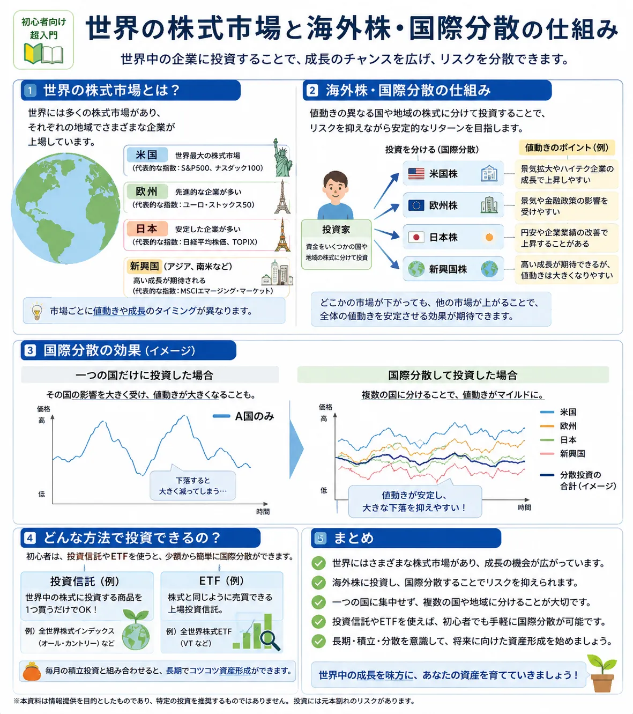

話題・トレンド
サクソバンク証券が海外株5市場を追加！海外株式・国際分散を初心者向けに解説
サクソバンク証券は2026年8月20日から、オーストラリア、カナダ、オランダ、 スウェーデン、シンガポールの5カ国の株式を新たに追加しました。 公式発表では、この5カ国で400銘柄超を追加すると案内されています。 今回はこのニュースを入口に、「海外株式とは何か」「米国株以外にはどんな市場があるのか」 「国や地域を分けて投資する国際分散とは何か」を初心者向けに整理します。
Overview
ニュースから「海外株式」と「国際分散」まで整理
今回のニュースで重要なのは「サクソバンク証券で銘柄が増えた」という点だけではありません。 米国株以外にも世界には多くの株式市場があり、国ごとに経済構造や主要産業、通貨、制度が異なることを知るきっかけになります。

先に注意： 海外株へ投資すれば自動的にリスクが小さくなるわけではありません。 投資先の国が増えても、同じ業種への集中や投資金額の偏りが大きければ、 ポートフォリオ全体のリスクが高くなることがあります。
Latest News
サクソバンク証券が海外株式の取扱市場を拡充
サクソバンク証券の公式発表によると、2026年8月20日から新たに オーストラリア、カナダ、オランダ、スウェーデン、シンガポール株式の取扱いが追加されました。
オーストラリア
オーストラリア株式が新たな取扱対象に加わりました。
カナダ
カナダ株式が新たな取扱対象に加わりました。
オランダ
オランダ株式が新たな取扱対象に加わりました。
スウェーデン
スウェーデン株式が新たな取扱対象に加わりました。
シンガポール
シンガポール株式が新たな取扱対象に加わりました。
400銘柄超を追加
サクソバンク証券の公式発表では、今回の5カ国で400銘柄超を追加すると案内されています。
サクソバンク証券の公式発表では、従来から米国、ドイツ、フランス、イタリア、 スペイン、中国、香港などの株式・ETFを取り扱い、 10,000以上の商品を用意していると説明されています。 一方、「国の数」と「証券取引所の数」は同じ意味ではないため、本記事では両者を分けて扱います。
Definition
そもそも海外株式とは？
海外株式とは、日本以外の国や地域の証券取引所などに上場している企業の株式を指します。 日本の投資家には米国株が身近ですが、海外株式は米国株だけではありません。
海外株式
世界各地の企業へ投資する株式
米国、カナダ、欧州、オーストラリア、アジアなど、世界各地には証券取引所があります。 それぞれの市場に、その地域を代表する企業や世界的に事業を展開する企業が上場しています。
米国株
海外株式の一つ
米国株は海外株式という大きな分類の一部です。 「海外株＝米国株」と考えるのではなく、世界にはさまざまな市場があると理解すると、 投資ニュースを読みやすくなります。
国によって経済を支える産業の構成も違います。 資源産業が大きな割合を占める国もあれば、金融、製造業、テクノロジー、 医薬品、消費財などが存在感を持つ国もあります。 こうした違いが、株式市場の値動きの違いにつながる場合があります。
米国株の基本から確認したい方は 「米国株とは？」 もあわせて確認すると、海外株式との関係を整理しやすくなります。
Five Markets
今回追加された5市場にはどんな特徴がある？
ここでは特定の企業や銘柄を推奨するのではなく、 各国の株式市場を理解するための一般的な産業構造を簡潔に整理します。
オーストラリア｜資源・金融などが存在感を持つ市場
オーストラリアは鉄鉱石や石炭など豊富な資源を持つ国で、 鉱業・資源関連企業が株式市場で存在感を持っています。 銀行などの金融企業も重要な構成要素です。 資源価格や中国を含むアジア経済の動向が注目されることがあります。
カナダ｜資源・金融を含む幅広い産業
カナダは原油や天然ガス、鉱物資源などを有し、 エネルギー・資源産業が経済で重要な役割を持っています。 一方で金融、通信、テクノロジーなど幅広い企業が存在し、 米国経済との結び付きも強い市場です。
オランダ｜欧州経済と世界市場につながる企業が多い
オランダは欧州の物流・金融・製造などと深く結び付いた経済を持っています。 テクノロジー、産業機器、金融、消費関連など、 国際的に事業を展開する企業も存在します。 欧州景気やユーロの動向も株価を見るうえで重要になります。
スウェーデン｜製造業・産業技術などに強み
スウェーデンには製造業、産業技術、通信、消費関連など、 世界市場で事業を展開する企業があります。 国内人口だけでなく海外売上への依存度が高い企業もあり、 世界景気や欧州経済の影響を受ける場合があります。
シンガポール｜アジアの金融・物流拠点
シンガポールはアジアを代表する金融・物流拠点の一つです。 金融、不動産、物流、通信などの企業が存在し、 東南アジアを含むアジア経済とのつながりを考えるうえでも注目される市場です。
「その国の代表産業が強い＝その国のすべての株が同じ方向に動く」という意味ではありません。 同じ市場の中でも企業ごとに事業内容、財務状況、売上地域、競争環境は異なります。
Beyond U.S. Stocks
米国株以外へ投資できる意味とは？
海外株というと米国の大型企業をイメージしやすいですが、 国が変われば経済構造、主要産業、景気サイクル、取引通貨なども変わります。
Economic Structure
国によって経済構造が違う
資源輸出の影響が大きい国、製造業が強い国、 金融やサービス業の比率が高い国など経済構造はさまざまです。
Industry
強い産業が違う
米国ではテクノロジー企業が注目されやすい一方、 他国では資源、金融、製造、医薬品など別の産業が大きな存在感を持つ場合があります。
Business Cycle
景気サイクルが同じとは限らない
すべての国が同時に同じ景気局面になるとは限りません。 金利政策、資源価格、貿易相手国などによって景気の強弱が異なる場合があります。
Currency
使われる通貨も違う
米ドルだけでなく、ユーロ、豪ドル、カナダドル、スウェーデンクローナ、 シンガポールドルなど、投資先によって通貨が変わります。
投資できる市場が増えることは選択肢の拡大につながりますが、 選択肢が多いほど必ず有利になるわけではありません。 自分が理解できる市場や企業なのかを確認することが重要です。
Diversification
国際分散とは？
国際分散とは、投資先を一つの国や地域だけに集中させず、 複数の国・地域へ分ける考え方です。 分散投資を一段広く考えた方法の一つといえます。
銘柄分散
一つの企業だけに資金を集中させず、複数企業へ分ける考え方です。
セクター分散
テクノロジーだけ、銀行だけなど、一つの業種へ偏りすぎないようにする考え方です。
国・地域分散
日本や米国など特定の国だけでなく、複数の国・地域へ投資先を分ける考え方です。
分散投資の基本は 「分散投資とは？」、 同じ業界への偏りについては 「分散投資におけるセクター分散と同じ業界に偏るリスク」 で詳しく整理しています。
ただし、国際分散をしたからといって「安全」になるわけではありません。 世界的な金融危機や景気後退では複数国の株式が同時に下落する場合があります。 また、複数の国へ投資していても、実際にはすべてテクノロジー株だった、 あるいは一つの地域への投資金額が極端に大きかったということもあります。
分散を考えるときは、保有銘柄数だけでなく セクター、 ポジションサイズ、 国・地域の偏りをまとめて確認することが重要です。
Benefits
海外株式のメリット
海外株式のメリットは「海外だから高いリターンが期待できる」ということではありません。 日本株だけでは得にくい投資対象や経済へのアクセスが増える点にあります。
01
日本では投資しにくい企業・産業へアクセスできる
世界には日本市場に上場していない企業が数多く存在します。 国によっては資源、テクノロジー、金融、医薬品など独自の強みがあります。
02
投資対象の選択肢が広がる
日本株や米国株だけでなく複数の市場を確認できることで、 自分の投資目的に合う企業や産業を探せる範囲が広がります。
03
国・地域分散に利用できる
特定国への集中を避けるため、ポートフォリオの一部を異なる国や地域へ配分する方法があります。 ただし分散効果は保有内容によって異なります。
04
世界経済への理解が深まる
投資候補として各国を見ることで、資源価格、金利、為替、貿易、 景気サイクルなど世界経済のニュースを理解しやすくなります。
投資では期待できるリターンだけではなく、 どのような損失が起こり得るかを確認することが大切です。 基本は 「投資のリスクとリターンの関係とは？」 でも解説しています。
Risks & Costs
海外株式の注意点
海外株式では、日本株と同じ株価変動リスクに加え、 通貨、税制、取引制度、情報収集など確認する項目が増えます。
Currency Risk
為替変動リスク
外貨建ての株式では、株価だけでなく為替レートも円換算した資産価値へ影響します。 円高・円安によって利益や損失が変化します。
Trading Fee
売買手数料
国や取引所によって売買手数料や最低手数料などが異なる場合があります。 少額取引では最低手数料の影響が大きくなることもあります。
FX Cost
為替手数料・スプレッド・両替コスト
円から外貨、または取引口座の基準通貨から別の通貨へ交換する際に、 両替コストが発生する場合があります。 売買手数料だけでなく通貨交換の費用も確認しましょう。
Tax
税金
国内での株式の課税には日本株と共通する部分がありますが、 口座区分や取引内容によって扱いが異なる場合があります。 実際の申告や課税については最新の税務情報を確認してください。
Dividend Tax
配当への外国税
海外企業から受け取る配当は、投資先の国で源泉徴収される場合があります。 条件によって外国税額控除を利用できる場合がありますが、 国や状況によって扱いが異なります。
Trading Hours
取引時間
海外市場は日本とは現地時間・休場日が異なります。 欧米市場では日本の夜間に主要な取引時間を迎える場合もあります。
Rules
市場ごとの制度の違い
注文方法、価格配信、最低取引単位、取引所費用、決済制度など、 市場ごとに仕組みが異なる場合があります。
Information
海外企業の情報収集
決算資料や重要情報が現地言語や英語中心になる場合があります。 日本語のニュースだけでは十分な情報を得にくい企業もあります。
Country Risk
カントリーリスク
政治・政策・規制・地政学・資本規制など、 投資先の国固有の事情が企業や市場へ影響する場合があります。
Liquidity
流動性
市場や銘柄によって取引量は異なります。 流動性が低い銘柄では売値と買値の差が広がったり、 希望する価格で売買しにくくなる場合があります。
海外株＝日本株より優れている、という関係ではありません。 国内株にも海外株にもそれぞれ特徴とリスクがあります。 「どちらが上か」ではなく、自分の投資目的や知識、リスク許容度に合うかで考えることが大切です。
Currency
為替によって利益・損失が変わるのはなぜ？
海外株を円で評価するときは、 「株価そのものの変動」と「為替レートの変動」 の両方が影響します。
Example A
株価が10％上昇した場合
ある海外株を現地通貨で100から110へ値上がりしたとします。 現地通貨ベースでは10％の上昇です。
Example B
同時に円高になった場合
保有中に円高が進むと、同じ110という株価でも円へ換算した価値が小さくなることがあります。 そのため株価の10％上昇が、そのまま円ベースの10％利益になるとは限りません。
| 株価 | 為替 | 円換算した資産への影響イメージ |
|---|---|---|
| 上昇 | 円安方向 | 株価上昇と為替の両方がプラス方向に働く場合がある |
| 上昇 | 円高方向 | 株価上昇分の一部が為替によって小さくなる場合がある |
| 下落 | 円安方向 | 為替が株価下落の一部を相殺する場合がある |
| 下落 | 円高方向 | 株価と為替が両方マイナス方向に働く場合がある |
※ スマートフォンでは横にスクロールできます。
為替の基本は 「円安とは？なぜまたニュースになるの？」 でも初心者向けに整理しています。 海外株を見る際は株価チャートだけでなく、円と取引通貨の関係も意識しましょう。
Saxo Bank Securities
サクソバンク証券では何が変わった？
今回の変更で分かりやすく変わった点は、 これまでの外国株式ラインナップに新たな5カ国の株式が加わり、 投資対象として確認できる市場・銘柄の選択肢が広がったことです。
Before
従来から複数地域の外国株を取扱い
サクソバンク証券では従来から米国、中国・香港、欧州などの外国株式・ETFを取り扱っています。
From 2026-08-20
5カ国・400銘柄超を追加
オーストラリア、カナダ、オランダ、スウェーデン、シンガポール株式が追加され、 公式発表では400銘柄超の追加とされています。
ただし、取扱市場が多い証券会社＝すべての初心者に適した証券会社 という意味ではありません。
-
自分が必要とする商品を取り扱っているか
海外株が多くても、自分が取引したい商品や制度に対応していなければメリットを活かせません。
-
売買手数料・最低手数料を確認する
市場によって手数料体系が異なる場合があるため、実際に取引する市場の条件を確認します。
-
為替・両替コストを確認する
海外株では売買手数料とは別に通貨交換によるコストが発生する場合があります。
-
取引ツールを使いこなせるか確認する
高機能であることと初心者が迷わず使えることは同じではありません。画面や注文方法との相性も重要です。
投資ポータル.jpではサクソバンク証券そのものの特徴を 「サクソバンク証券」紹介ページ でも整理しています。 今回の記事は市場追加のニュースと海外株教育を目的としており、 口座開設や特定商品の購入を推奨するものではありません。
Checklist
初心者が海外株を見るときのポイント
海外株は銘柄名だけを見るのではなく、 「どこで・何の通貨で・どのような条件で取引するのか」を確認することが大切です。
-
どこの国の企業なのか
企業の本拠地だけでなく、売上をどの地域で稼いでいるかも確認します。
-
どの市場へ上場しているのか
同じ企業でも複数市場へ上場している場合があります。実際に取引する市場を確認しましょう。
-
どの通貨で取引するのか
米ドルだけではありません。市場ごとに取引通貨が異なります。
-
為替リスクはどの程度あるか
株価とは別に、円と取引通貨の値動きが資産価値へ影響します。
-
手数料はいくらか
売買手数料、最低手数料、両替コスト、取引所費用などを確認します。
-
税制を理解しているか
売却益だけでなく配当への外国税など、海外株特有の確認項目があります。
-
企業情報を十分確認できるか
日本語情報が少ない企業の場合、自分で決算や重要情報を確認できるか考えます。
-
特定国へ偏っていないか
保有銘柄が多くても、投資金額の大半が一つの国に集中していないかを確認します。
投資額そのものの偏りを考える際は 「ポジションサイズとは？」、 長期で保有する考え方は 「長期投資とは？」 も参考になります。
Related Articles
海外株・分散投資と一緒に読みたい記事
海外株式を理解するには、分散、セクター、為替、ETF、リスク管理を一緒に学ぶと整理しやすくなります。
FAQ
海外株式・サクソバンク証券に関するよくある質問
-
海外株式とは何ですか？
海外株式とは、日本以外の国や地域の証券取引所などに上場している企業の株式を指します。 米国株だけでなく、欧州、カナダ、オーストラリア、アジアなど世界各地に株式市場があります。 -
米国株と海外株は違うのですか？
米国株は海外株式の一部です。 「海外株式」という大きな分類の中に米国株、欧州株、カナダ株、オーストラリア株、 アジア各国の株式などが含まれると考えると分かりやすいでしょう。 -
サクソバンク証券ではどこの国の株を取引できますか？
2026年8月20日から新たにオーストラリア、カナダ、オランダ、スウェーデン、 シンガポール株式が追加されました。 サクソバンク証券では従来から米国、中国・香港、ドイツ、フランス、 イタリア、スペインなど複数の国・地域の外国株式を取り扱っています。 実際に取引できる銘柄や市場は変更される可能性があるため、最新の公式情報を確認してください。 -
海外株には為替リスクがありますか？
あります。 海外株では株価そのものの値動きに加えて、取引通貨と円の為替レートが 円換算した損益へ影響します。 株価が上昇していても円高によって円換算利益が小さくなる場合があります。 -
海外株へ投資すれば分散になりますか？
国や地域を分けて投資することは国際分散の一つですが、 海外株を持つだけで十分な分散になるとは限りません。 複数国へ投資していても同じ業種に集中していたり、 一つの国への投資金額が大きければリスクが偏ることがあります。 銘柄、セクター、国・地域、ポジションサイズをあわせて確認することが重要です。 -
海外株の税金は日本株と同じですか？
国内での株式の課税には日本株と共通する部分がありますが、 海外企業の配当では外国で源泉徴収される場合があります。 条件によって外国税額控除を利用できる場合もあります。 税制は口座や取引状況によって異なるため、実際の申告については 証券会社、国税庁、税務署、税理士などの最新情報を確認してください。 -
初心者が海外株を取引するときの注意点は？
企業の所在国、上場市場、取引通貨、為替リスク、売買手数料、 両替コスト、税制、取引時間、情報収集のしやすさ、流動性、 カントリーリスクなどを確認しましょう。 取扱銘柄数が多いことだけで証券会社や投資先を判断しないことも大切です。
Summary
まとめ｜海外株は「市場が増えた」だけでなく世界へ分散する考え方を学ぶきっかけ
- サクソバンク証券は2026年8月20日から海外株式の取扱対象を拡充しました。
- 今回追加されたのはオーストラリア、カナダ、オランダ、スウェーデン、シンガポールの5カ国です。
- サクソバンク証券の公式発表では今回400銘柄超を追加するとされています。
- 公式サイトでは従来から外国株式・ETFを10,000以上取り揃えていると案内されています。
- 海外株式は米国株だけではなく、欧州、アジア、オセアニアなど世界各地に存在します。
- 銘柄分散・セクター分散に加え、投資先の国・地域を分ける「国際分散」という考え方があります。
- ただし、海外へ分散しただけで投資が安全になるわけではありません。
- 海外株には為替、売買手数料、両替コスト、税金、外国税、取引時間、市場制度、情報収集、カントリーリスク、流動性などの注意点があります。
- 市場数や銘柄数だけで証券会社や投資先を判断せず、自分の投資目的とリスク許容度に合わせて判断することが重要です。
Next Step
海外株を見る前に「分散」と「証券会社選び」を整理する
海外市場の選択肢が増えても、すべてを利用する必要はありません。 まずは銘柄・業種・国・投資金額の偏りを確認し、 自分が必要とする市場を扱っている証券会社を選ぶことが大切です。
ご利用にあたっての注意事項
本記事は一般的な情報提供および金融教育を目的としており、 サクソバンク証券を含む特定の証券会社、外国株式、ETF、企業・銘柄の推奨や 投資の勧誘を目的としたものではありません。 外国株式等の金融商品は元本保証がなく、株価変動、為替変動、信用状況、 流動性、政治・経済情勢、制度変更などにより損失が生じる場合があります。
取扱銘柄、取引手数料、最低手数料、為替・両替コスト、取引時間、 税務上の取扱いなどは変更される場合があります。 実際に取引を行う際は、サクソバンク証券を含む各金融機関の最新の公式情報、 契約締結前交付書面、取引説明書、税務当局の案内などを確認し、 ご自身の判断と責任で行ってください。